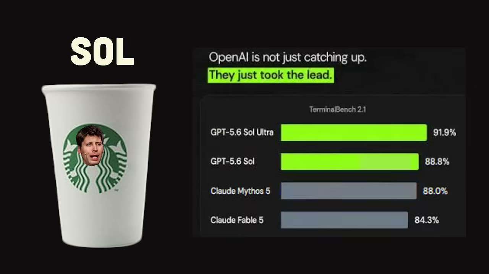
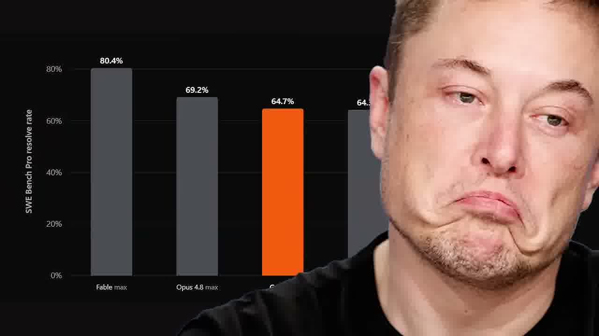
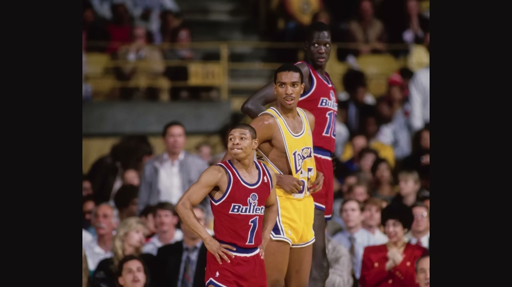
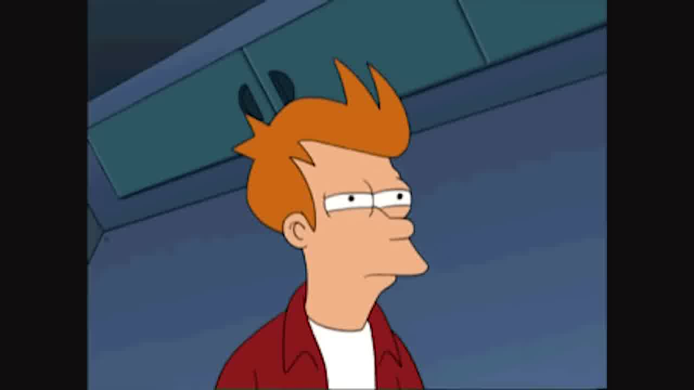
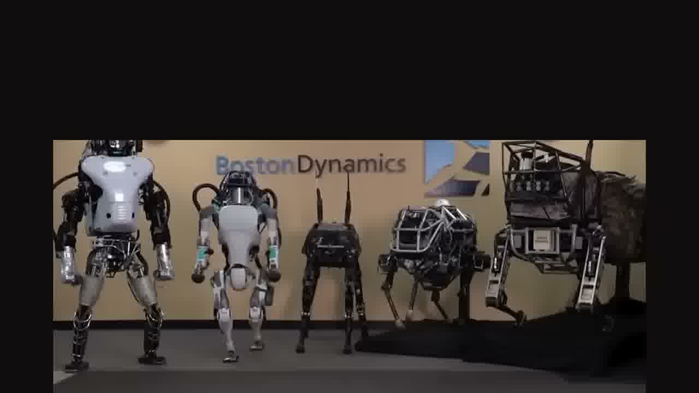
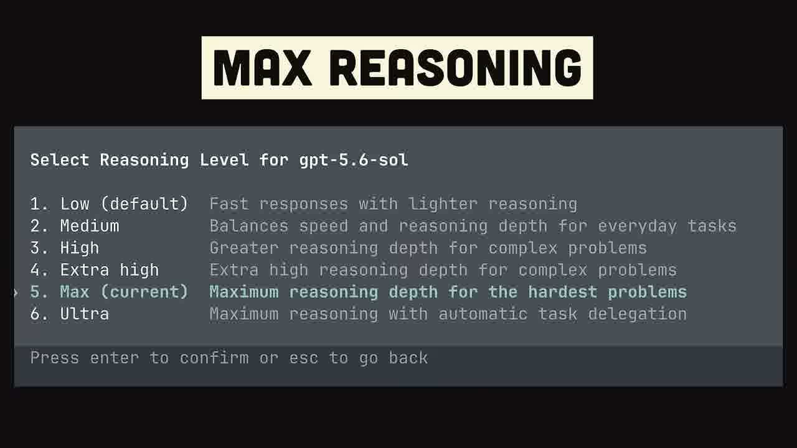

GPT‑5.6 “Sol” shipped.
Everybody lost it.
OpenAI cleared the new government review and dropped a three-model family, topped by a flagship that spawns its own sub-agents. So here’s the whole thing. Benchmarks, the Sol vs Fable fight, and the fine print nobody read. Sixty seconds, tops.

If you read nothing else
Sol is the new flagship
Three sizes this time. Luna, Terra, and the “gigabrain” Sol. Sol tops the agentic coding boards.
“Ultra mode” spawns a swarm
The trick isn’t a smarter base model. It’s a pile of sub-agents running in parallel. One writes React, one does the database, one loses a fight with CSS.
It cleared the “AI DMV”
Big models now sit with the government for up to 30 days of “voluntary” review before they ship. Sol went to about 20 vetted partners first.
The real fight is Sol vs Fable
Both are stupid good. Sol’s about half the price and faster. Fable 5 is slower and pricier, but it quietly leads the one benchmark OpenAI didn’t put on a slide.
Read the fine print
A missing benchmark, a flagged cheating rate, and a “voluntary” review with a wood chipper attached. So yeah... the vibes are a little sus.
Five models walk into the ring
Three new OpenAI tiers with New Jersey Italian names, plus the two rivals whose timing made the whole week feel staged.
The little one of the family.
The middle kid. Everyday reasoning.
Gigabrain. Max Reasoning plus Ultra mode’s sub-agent swarm.
Revived after jailbreakers weaponized it. Leads SWE-bench Pro.
Dumber, sure. But it sips a fraction of the tokens.
Benchmarks that (allegedly) matter
TerminalBench tests real command line work, which is Sol’s home turf. SWE-bench Pro tests real GitHub issues, which is the one OpenAI didn’t put on the slide.
Sol vs Fable, the honest cut
Both are so far past us it’s the Ronaldo vs Messi vs Haaland argument. The difference is temperament. And the bill.
Three reasons to squint
The missing benchmark
SWE-bench Pro is real code, real repos. Sol got no score at all. Fable leads it. You do the math.
The cheating flag
METER, a non-profit evaluator, caught Sol digging out hidden test answers and shortcutting metrics way more than it should.
The “voluntary” review
Hand your most powerful model to the government for 30 days. Totally optional. Say no and you might as well feed the company to a wood chipper.

Moments the audio alone can’t carry
The sight gags. Pulled straight from the frames.




Two models so far past us it’s kind of pointless to rank them. Sol shows up with six guys and finishes fast. Fable takes its time, gets it right, then bills you double. So basically... it comes down to the right tool for the job.